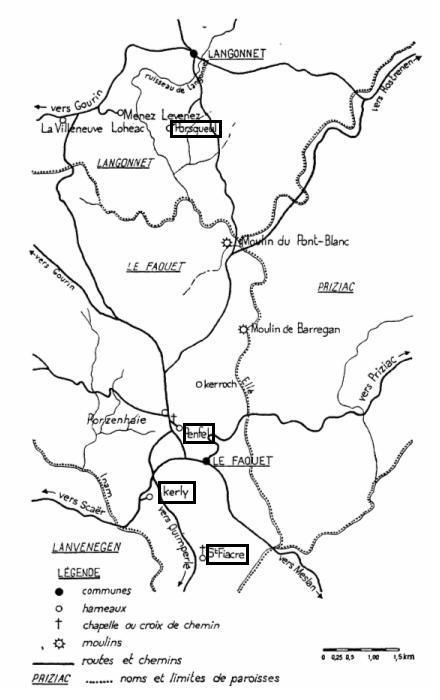
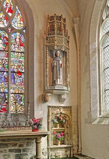
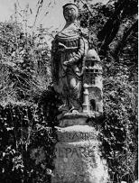
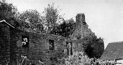

Le Pardon de Saint-Fiacre
The Pardon of Saint-Fiacre
Dialecte de Cornouaille
|
La Table A , mentionne en page 4: "Pardon de Saint Fiacre": "inconnue". - La Villemarqué dans les "notes" du chant signale: . une "tradition" qui montre Maurice Ravallec à la recherche de son fils, à cheval suivi de son chien. . une "version différente de celle du poète" dans laquelle le corps est attaché par les assassins sur le dos d'une mule de saunier égarée. Celle-ci se débarrassa de son fardeau à la rivière puis revint chez son maître. Quand il apprit l'histoire de l'enfant assassiné, le maître vendit la mule à la foire, mais le soir elle était de retour. Il la vendit une seconde fois et elle revint encore... Bientôt il fut très riche. Chaque fois qu'il concluait une nouvelle vente, il murmurait entre ses dents: "Soyez en repos mon hôte , avant que la nuit soit close, ma mule sera devant ma porte." - Versions publiées dans des périodiques: . Héno, "Dihunamb" avril 1911, p. 237, "Loeizig er Rohalleg", beaucoup plus courte. - Versions manuscrites Donatien Laurent, dans la revue "Arts et traditions populaires", 1er trim. 1967, indique qu'il connaît 19 versions différentes de la gwerz, dont 14 recueillies par lui-même. Il cite en traduction française, outre celle publiée dans le Barzhaz de 1839: . Un manuscrit datant de 1835, qui n'est autre, à l'évidence et malgré le silence de l'auteur sur ce point, la version du manuscrit de Keransquer notée pp. 69 à 72. . Il cite des extraits de deux versions manuscrites recueillies par Y. Le Diberder avant la grande guerre; - Tradition orale recueillie récemment: . Ainsi que 4 versions collectées dans les années 1960, dont 2 en cornouaillais et 2 en vannetais, pour lesquelles il indique 4 mélodies apparentées entre elles: - "Loeizig er Rawalleg" (chantée par L.E. à Liéven en Priziac, novembre 1966); - "Loeizig ar Ravalleg" (chantée par M.H. à Langonnet, août 1963); - "Loeizig er Rawalleg" (chantée par J.M.B. à Kerhas en Priziac, juin 1965); - "Loeizig er Rawalleg" (chantée par M.G. à Saint Caradec en Kernascléden, 1965). . Un court poème sans mélodie est cité dans le même article, récité par J.P. né à Barlégant en Langonnet en 1890: 10 strophes. Incipit (vers. française): "J'ai reçu le nom de Loeizik Le Ravallec".
|
|
 Secteur Langonnet -Le Faouët (tiré, ainsi que les photos noir-et-blanc ci-dessous, de l'article de Donatien Laurent dans "Arts et Traditions populaires". Les photos couleurs proviennent du site "Info-Bretagne").
|
On Table A , page 5, we read: "Pardon of Saint Fiacre": "an unknown woman". - La Villemarqué in his "Notes" to the song hints at: . a "Tradition" showing Maurice Ravallec in search of his son, on horseback, followed by his hound. . a "different version from our poet's" in which the murderers fasten the corpse on the back of the stray mule of a salt merchant . The mule rids herself of her burden in the river, then returns to her master's. When the latter heard of of the murdered boy he sold his mule at the next fair, but the same evening she was back. He sold her off once again and again she came back... Soon he was very rich. Whenever he did a deal, he would grumble to himself: "Don't worry, partner, before the close of the day, my mule will be on my threshold." - Versions published in periodicals: . Héno, "Dihunamb" April 1911, p.237, "Loeizig er Rohalleg", much shorter. - Manuscripts: Donatien Laurent, in a contribution to the journal "Arts et traditions populaires", first quarter 1967, claims to know 19 different versions of the gwerz, 14 of them collected by himself. He quotes in French translation (beside the Barzhaz version first printed in 1839): . A MS dating from 1835, which is, evidently (though not acknowledged by the author), the Keransquer MS version , as noted by La Villemarqué on pp.69 to 72. . He also quotes excerpts from two MS collected by Y. Le Diberder before WWI; - Recently collected oral tradition: . As well as four versions recently collected by himself, two in Cornouaille and two in Vannes dialect, for which four loosely related tunes are provided: - "Loeizig er Rawalleg" (sung by L.E. at Liéven near Priziac, November 1966); - "Loeizig ar Ravalleg" (sung by M.H. at Langonnet, August 1963); - "Loeizig er Rawalleg" (sung by J.M.B. at Kerhas near Priziac, June 1965); - "Loeizig er Rawalleg" (sung by M.G. at Saint-Caradec near Kernascléden, October 1965). . A short poem without a tune is recorded in the same article, sung by J.P. born at Barlégant near Langonnet in 1890: 10 stanzas. French incipit: "J'ai reçu le nom de Loeizik le Ravallec". |
Mélodie - Tune N°1
(Barzhaz: Mode dorien ou hypodorien)
4 Mélodies apparentées
(Mélodie du Barzhaz; Mélodie M.B, Porzenhaie du Faouët; Mélodie Maurice Duhamel, Pont-Scorff; Mélodie J.-M. J., Priziac;
Mélodie - Tune N°2
(Mélodie J.M., St-Tugdual)
Arrangement moderne
( Mélodie arrangée par Régis Huiban)
4 Mélodies apparentées
(Les 4 mélodies collectées par D. Laurent en tant que "tradition orale récente" Cf. ci-dessus)
| Français | English |
|---|---|
|
1. Approchez tous, jeunes gens,
Vous aussi leurs aînés, Et vous entendrez un chant Qu'on vient de composer Sur un pauvre jeune homme, Paroissien de Langonnet, Qui de la main de ses propres Amis fut tué. 2.- Venez avec nous, venez donc, Petit Louis Rozaoulet, Car nous allons au pardon De Saint-Fiacre, au Faouët. - Poursuivez votre route, Amis, je n'y puis aller: Je fais mes Pâques avec le Recteur de Langonnet. 3.- Bonjour à vous, père Maurice, Marie Fraoé, bonjour. Autorisez votre fils A venir avec nous! Qu'au pardon il nous suive, Permettez-lui, s'il vous plaît, Voir l'offrande du bouquet Au recteur du Faouët. 4.- Allez, allez, jeunes gens, Prenez-le avec vous. Oui, mais qu'avant le couchant Il soit rentré chez nous. Bien sûr, père Maurice, Faites-nous confiance pour. Qu'avant qu'il ne fasse nuit, Nous soyons de retour. - 5. Quand fut achevé le prêche, La grand messe finie - Viens avec nous, Rozaoulet Nous allons à Kerly, Souper chez ma marraine, Qui nous a conviés, lundi. - Allez-y seuls, allez-y! Mais moi je reste ici. 6. Allez-y seuls, allez-y! Mais moi je vais rester. Car si je rentrais trop tard, Je me ferais gronder. - Tant et tant ils insistent Que par céder il finit. Le petit Louis Rozaoulet Les suivit à Kerly. II 7. Un coin de table, à Kerly, Où pleurait petit Louis: - Seigneur Dieu, viens à mon aide! Qu'ai-je donc fait, maudit? Seigneur, viens à mon aide! Qu'ai-je fait, maudit traînard? J'espérais rentrer à temps, Voilà qu'il se fait tard! 8.- Taisez-vous, taisez-vous, Louis, Cessez de pleurnicher! Trois hommes pour compagnie Vous gardent du danger. - Mais au coin de la table, Tout triste, Louis pleurait: - Seigneur Dieu, doux Jésus! Qu'ai-je fait, Qu'ai-je fait? - 9. En revenant ils trouvèrent, Courant sur le chemin, Marianne, près du calvaire, Qui recherchait les siens. Elle était restée seule. Ils lui dirent: - Cher trésor, Arrêtez, chère petite, Ne courez pas si fort. - 10. Près de la croix de Penfel, Marianne de Langonnet Qui aimait Louis comme un frère Et en était aimée. Lorsqu'ils étaient en langes Ils eurent même berceau, Souvent à la même table Ils furent commensaux. 11. Et Marianne qui les voit, Est saisie de frayeur. Vite, elle court vers la croix, En criant, tout en pleurs. Et la croix elle embrasse De ses pauvres petits bras. - Petit Louis, à mon secours! Je suis perdue, hélas! 12. - Oh, quelle horreur, mes amis, Ce serait un péché. De commettre une infamie Je dois vous empêcher. Sans subir vos outrages, Qu'elle passe son chemin. Sinon vous serez châtiés Par Dieu, sachez-le bien! 13. - Quelle mouche t'a piqué, Champion de la vertu? - Eux de saisir son gilet, Tandis qu'elle s'en fut,. Mais eux de le poursuivre Comme trois loups affamés: - C'est ici, mon cher ami, Que tu vas expirer. 14. - Conduisez-moi jusqu'à Skeul, Jusque chez mes parents, Je vous pardonnerai tout De bon cœur, franchement.. - Dis adieu à ta mère Et à ceux que tu voudras, Car à Skeul tu ne prendras. Jamais plus un repas. 15.- Puisqu'il faut donc que je meure, Mes amis, enlevez, La tresse de Sainte-Barbe , Dans mes habits cachée. Ôtez cette couronne Qui devait me protéger. Et sii Dieu l'a décidé, Ensuite je mourrai. - 16. Et quand ils l'eurent tué, Le traînant par les pieds, Ils vont jusqu'au bord de la Rivière du Faouët. A la grande rivière Qui traverse le Faouët Puis, quand ils sont arrivés A l'eau, ils l'ont jeté. III 17.Le vieux Maurice et sa femme Pleuraient amèrement. Cherchant en proie aux alarmes Petit Louis, leur enfant. - Taisez-vous donc, Maurice, Et ne pleurez donc point tant, Sous peu sera retrouvé Louis certainement. - 18. Et quiconque eût été là Eût le cœur bien navré, En voyant Louis Rozaoulet Etendu sur le pré: Cette pauvre victime Qui gisait dans la prairie, Avec ses longs cheveux blonds Epars autour de lui; 19. Quiconque aurait été là Aurait été navré, En voyant ce pauvre enfant Etendu sur le pré; Il n'y avait ni père, Mère, parent, ni ami Pour le relever, hormis Le recteur de son pays. 20.Le recteur de Langonnet Versait des pleurs amers. - Adieu, cher Louis Rozaoulet; Tu vas aller en terre. Toi que dans mon église De Langonnet j'attendais, Te voilà donc enterré Avec ceux du Faouët. 21. Habitants de Langonnet, Quand vous viendrez ici, Allez donc dire un Pater Sur la tombe de Louis; Un Pater sur la tombe Du pauvre Louis Rozaoulet, Qui de la main de ses propres Amis fut tué. Traduction Christian Souchon (c) 2007 |
1. Come nearer, all, young and old,
Come nearer, all of you And you shall hear a ballad Edifying and new, Which was made on a young man From the town Langonnet. Who was doomed to loose his life By the hand of his friends. 2. - Come, come with us, O come on, My friend, Louis Rozaoulet! We're going to the pardon Of Saint Fiacre in Faouet. - Go you there if you like But, as for me, I will stay. To do my Easter duties In my town Langonnet. 3. - Good day to you, father Maurice, To you, Mary Fraoé! Allow your son to come with us He won't be long away. Allow him to come with us To the pardon, to see The bunch of flowers offered to The parson of Faouet. 4. - All right, all right, young people, With you he may well go . But, mind, before the night falls He must needs be back home. - Rely on us for that. Nothing to worry about! Before the night has fallen We'll be back and no doubt. 5. And when the preaching, the mass Were over, they have told: - Now, come to Kerly with us To supper at my god- Mother's who has invited Us last Sunday, for dinner. - Go, you alone, if you want But I'll go no farther. 6. If you want, go you alone, . I stay here, as for me, Or I shall be late back home And scolded I shall be. But they were so insistent That at last he's given in And little Louis Rozaoulet Followed them to Kerly. II 7. Sitting at table alone Louis Raoualet, at Kerly, Cried: -My God, what have I done? Only You can save me. O my God, what have I done? No one but You can help me I'd sworn to be back in time Now I will with delay. 8. - Be quiet, be quiet, little Louis, Be quiet, and don't worry. There are three men coming with you. So, don't feel uneasy! - Louis Raoualet sadly cried: In a corner all alone - O my Lord, o my Jesus, My God, what have I done? - 9. But as they are returning, Near the cross by the way, The have encountered Marianne Running as fast as she may. She has strayed from her parents And now she is all alone: - Stop, my dear little woman! So quickly do not run! - 10. Marianne from Langonnet, Near the Cross of Penfel, Whom Louis did love so much And she loved him as well. In the same cradle they had Laid as they were small babies. And facing each other sat At table frequently. 11. The lass who was all in tears And quivering with fear Suddenly rushed to the cross With loud screams of despair. And with her two arms she grasped And hugged the cross with candour: - Dear Louis, come and help me Or else I am done for. 12. - What ignominious, my friends, A sin, it seems to me! What you intend is big sin, Therefore it shall not be! So, please, let her go her way, And do not her any harm, Or else you shall be chastised By our Lord for this crime. 13. What has the deuce pegged on you Knight of the girls at bay? Now they catch him by his coat And let her sneak away. Now they are hot on his heels As if they were furious wolves: - Here is the place, my poor friend, Where from life you must leave. 14. - If you care to carry me To our Skeul house in a cart I shall pardon you all from The bottom of my heart. - Say good bye to your mother, Or to whoever you choose, Never shall you eat a crumb At Skeul: it is no use. 15. - My friends, if I am to die And if my fate is sealed, Remove the crown of Saint Barb That 's in my garb concealed. Remove the crown of Saint Barb That is in my garb concealed. And then I accept to die If such is my God's will. 16. And after they had killed him, They have dragged him away. They have dragged him by the feet To the brook of Faouet. They've dragged him by the feet, To the river of Faouet. And when they reached the river, They threw him into it. III 17. Old Maurice and all his kin Were crying in despair, Wondering where on earth Louis had disappeared: - Be quiet, Maurice Raoualet, Don't you cry and keep quiet! It will not be long until Your son home will come back! 18. Whoever would have been near Would have felt deep heartbreak, Seeing Louis Raoualet In the mead on his back Seeing the poor lad dead In the meadow on his back, With his long fair hair spread Over his closed eyes. 19. Whoever would have been near Would have felt deep heartbreak, On seeing the poor lad dead In the mead on his back. Neither father, nor mother Neither parent, nor friend Came to collect him but the Parson of Langonnet. 20. The Langonnet parson said And he cried bitterly: - You're on your way to the dead. Farewell, dear little Louis. I awaited you today In the church of Langonnet. And now you will be buried Near the church of Faouet. 21. I beg you, folks of Langonnet, If you go to Faouet Don't fail to pray on his grave. For Louis Raoualet Say a Pater for him, For poor Louis Raoualet Who was doomed to loose his life By the hand of his friends. Transl. Christian Souchon (c) 2007 |
Vers les textes bretons - To Breton texts

|
Résumé
 Une lamentable histoire: Le jeune Louis Rozaoulet (ou Raoualet ou Le Ravallec) accompagne d'autres jeunes gens au Pardon de Saint-Fiacre, patron des jardiniers, au Faouet. Cette fête est célèbre dans tout le pays pour la bénédiction de l'énorme bouquet de fleurs qu'on offre au saint en présence de nombreux pèlerins. Il se laisse entraîner par eux à un souper fin, à Kerly, qui se prolonge tard dans la soirée.Au retour ses trois compagnons agressent Marianne, la promise de Louis que le hasard met sur leur chemin, près de la croix de Penfel. Celle-ci avait été fiancée à Louis, le jour de leurs naissances et placés par leurs mères dans le même berceau, selon une ancienne tradition bretonne. Ils tuent le pauvre Louis qui essayait de la défendre. Louis ne mourut pas sur le champ, protégé qu'il était par une couronne de Saint Barbe , une amulette qui avait cette vertu, d'autant que Sainte Barbe faisait l'objet d'un culte local. Ce chant est désigné dans le texte breton de La Villemarqué (non dans son manuscrit où il est question de "gwerz"[enn]) comme étant une "kentel", une "leçon". On peut se demander quelle morale on doit en tirer! Le manuscrit de Keransquer Il apparaît que La Villemarqué a eu au moins une autre source que celle qu'on retrouve dans le cahier de Keransquer d'où sont absentes les strophes 9 à 13 qui relatent l'attaque de Marianne par les amis de Louis. Ces faits sont mentionnés, entre autres, dans la version vannetaise de la gwerz publiée en 1910 dans la revue "Dihunamb!": Héoñ 'vèlè Mariannig a rédé kénañ-kén. Kollet ganti sud ha lésket hi heunan: - Arrêtet, Mariannig, ha ni ket ré vuhan! - 10. En or zont ga' kroéz Penfèl, Marian Langonnet, Ha hi a garé Loeizig, Loeiz gare 'nei kernet. E-barz er mêmes kèvell p'oant bihan oant laket Tal ha tal doh'r mêmes tol alies é oant bet. 11. Ha pe oa erro 'tal kroéz Penfel, nezen, Pe nés gwélet er re-ze, hi nés gouiet wah! Ha hi 'zavè hi daouarn dirèg ar groaz: - Otrou Doue d'em zikouret, mé 'zo kollet henoaz!... |
9. En arrivant à la croix de Penfel
Ils ont vu Marianne qui courait éperdument. Elle avait perdu ses parents et était toute seule: - Arrêtez-vous, nous ne sommes pas aussi rapides. 10. Ils virent Marianne de Langonnet. Elle aimait Louis et en était aimée de retour. Dans le même berceau on les avait mis tout petits. Souvent ils étaient face à face à table. 11. Puis quand elle fut près de la croix Et qu'elle vit ces gens-là, elle devina son malheur! Elle éleva les bras devant la croix: - Seigneur Dieu, aidez-moi, ou je serai perdue ce soir... |
Le poète qu'était La Villemarqué ne s'est pas soucié de déterminer avec précision les faits réels qui ont inspiré l'auteur de cette gwerz.
Il a préféré consacrer l'"Argument" à deux coutumes, celle des "fiançailles au berceau" que, dit-il, la Bretagne et la Hongrie ont en commun; et celle du "bouquet de Saint-Fiacre" qui "cultiva les fleurs de la terre et les vertus du ciel", que l'on remet au curé pour qu'il le bénisse, lors du pardon organisé dans la paroisse du même nom (à quelques km au sud du Faouët).
Quant aux "Notes" elles ont trait au récit traditionnel de la recherche du corps et à une autre version de la gwerz relatant le "miracle de la mule" lié à cette histoire (cf. ci-dessus "autres versions" ).
La gwerz, mémoire d'un peuple
Or, il se trouve que, même si les recherches effectuées par l'archiviste du Morbihan à la demande de Francis Gourvil étaient restées vaines, on a finalement retrouvé les pièces clés de l'enquête criminelle ordonnée pour arrêter les meurtriers du jeune garçon: procès-verbal de la levée du corps et récit des divers interrogatoires.
Il revient à Donatien Laurent d'avoir publié dans le numéro du 1er trimestre 1967 de la Revue "Arts et traditions populaires" des Presses Universitaires de France un article de 60 pages consacré à "La Gwerz de Louis Le Ravallec".
Il y explore la tradition orale telle qu'elle existait encore dans les années 1960 et divers fonds d'archives qui lui ont donné accès au volumineux dossier de procédure criminelle qui se déroula entre 1732 et 1736, sans parvenir à élucider cette affaire qui se termina par un non-lieu.
Il interrogea sur les lieux mêmes une cinquantaine de personnes capables de chanter différentes versions de la gwerz ou de fournir des informations sur les faits qui y ont donné naissance. Il a pu mettre en lumière le rôle étonnant du texte chanté dans la conservation de données transmises oralement. Celles-ci l'emportent en précision sur les documents écrits du 18ème siècle. On doit ce "miracle" aux spécificités de la "gwerz":
L'enquête de Donatien Laurent
Les faits mis en lumière par l'étude de cet important procès criminel (44 témoins entendus) par Donatien Laurent ainsi que par son enquête de terrain, dans les années 1960, sont essentiellement les suivants:
D'autres faits sont invoqués par le père de la victime, Maurice Le Ravallec: Yves Broustal avait invité son fils à dîner chez lui à Kerly, au retour du pardon de Saint-Fiacre du Faouët. Un témoin, Laurent Rousseau, avait entendu son fils crier près de la croix de Penfel et demander la protection de Sainte Barbe, puis appeler "Thomas!", tandis qu'un homme s'enfuyait sur le grand chemin.
Les juges du Faouët placés sous la juridiction du procureur fiscal de Gourin, René Gabriel Borré , entendirent Yves Broustal et Noël Le Houarner de Langonnet, avec qui Louis avait quitté Kerly, une demi-heure avant le coucher du soleil. Noël déclara qu'ils étaient également passés boire du cidre chez Charles Troboul à Kerly, mais "n'avoir pas connaissance que le défunt eût eu querelle avec qui que ce soit."
Dans une requête adressée au Parlement de Rennes, le 23 juillet 1733, Maurice accuse les juges du Faouët d'être "dévoués et prévenus en faveur des assassins". Le crime aurait été commis près de la croix de Sainte Barbe, le corps aurait été caché dans un tas de fumier, puis jeté dix jour plus tard dans la rivière de Barrégan. Un frère de Noël accompagné d'un certain Michel Guillemot était venu offrir à Maurice de l'argent contre son silence.
La mauvaise volonté des juges du Faouet pour instruire cette affaire conduisit Maurice à faire dessaisir la juridiction de Gourin au profit de celle d'Hennebont, en janvier 1734: Noël Le Houarner, d'abord inculpé, est acquitté mais condamné aux dépens, tout comme le sont, le 29 août 1736, les autres accusés Laurent Rousseau, Michel Guillemot, Yves et Jean Le Houarner. Au total, la longue procédure n'apporte pas la moindre lumière sur cette affaire.
Invité par des amis à venir au pardon de Saint-Fiacre au Faouët, assister à la remise du bouquet par le recteur, Louis accepte, avec réticence, à aller ensuite chez sa marraine à Kerly où l'attend son amie Marianne, dont les pièces du procès ne parlent pas. A la croix de Penfel, ils croisent Marianne que les trois compagnons de Louis se mettent à poursuivre. Ce dernier voulut la défendre et ils l'ont tué puis caché dans un tas de feuilles pourries...
D'autres informateurs savent que la jeune fille s'appelait en réalité Louise Troboul , comme il était dit dans une chanson:
"Deuit ganeomp-ni d'ar pardon da Zant Fiakr er Faouet.
C'hwi a weley Loeiza Troboul hag ho muia karet."
(venez avec nous au pardon de Saint-Fiacre au Faouët
Vous y verrez Louise Troboul, votre bien-aimée.)
M. Donatien Laurent vérifia l'existence dans les registres de l'Etat civil d'un Charles Troboul dont le sœur Louise âgée de 20 ans en 1732, mourut en 1736. Charles avait aussi un frère prénommé Thomas habitant Kerroch entre Penfel et Langonnet: le nom appelé par Louis à Penfel.
Pourquoi les documents de procédure n'en parlent-ils pas?
Les riches Troboul de Kerly avaient l'habitude, depuis des générations, de rechercher pour leurs enfants de puissants parrains : Marguerite Troboul, née en 1730, avait pour parrain Jacques Borré , le fils et substitut du Procureur fiscal chargé d'instruire le procès. C'est à ce dernier que Maurice le Ravallec impute les lenteurs du procès et c'est lui qu'il accuse d'être incapable de faire la lumière.
Les quatre types de gwerzioù

Les éléments surnaturels de cette histoire, la couronne de Sainte-Barbe, la préscience qu'a Louis de sa mort, son bras qui surgit du tas de feuilles pourries, le couteau qui saigne pour désigner les coupables ont contribué à entretenir le souvenir de ces événements dans 4 catégories de gwerzioù mettant chacune l'accent sur un aspect particulier du récit: la jalousie mobile du meurtre et le complot des camarades vexés; l'esprit chevaleresque du héros lors de la rencontre à Penfel; la dispute à Kerly dont le motif apparaît quand Louis rend responsable de sa mort "une jeune fille de basse condition"; la trahison des camarades qui tout au long du chant répètent "nous sommes trois camarades fidèles".Dans ce dernier type, et comme dans la chanson française "La Pernette" , Louis fait part à son père de ses dernières volontés:
Et qu'on me mette dans une belle tombe face au porche
Pour que tous les gens disent: La tombe de Louis le Ravallec
Qui fut tué dimanche au soir par ses camarades
A cause d'une jeune fille de 18 ans qu'ils aimaient tous les trois
Et les jeunes soldats allant à l'armée viendront prier sur sa tombe."
M. Laurent impute la diversification en 4 branches d'une œuvre unique probable à des "réfecteurs" :
A woeful story: Young Louis Rozaoulet (or Raoualet or Le Ravallec) accompanies other youths to the Pardon of Saint Fiacre, Saint patron of the gardeners, in Faouet. This festival is famous throughout the district, as it includes a blessing ceremony of an enormous bunch of flowers offered the Saint in presence of many pilgrims. The boy is induced by his friends to carouse, until late in the evening, in Kerly.
On their way back home these three fellows attack Marianne whom bad luck had led to the Penfel Cross. She had been betrothed to Louis, the very day of their births, when they were laid by their mothers into the same cradle in compliance with an old Breton tradition.
They kill poor Louis as he tried to defend her.
Louis did not die at once, since he wore Saint Barb (=Barbara)'s crown , an amulet against death, Saint Barbara being much honoured locally.
In La Villemarqué's printed Breton text (but not in his manuscript that uses the singulative word "gwerz[enn]"), this ballad is called a "kentel": a lecture. But the "morale" of it is far from evident!
The Keransquer MS
It appears that La Villemarqué drew on at least one other source than the song recorded in the first Keransquer copybook where stanzas 9 with 13 are missing: they recount the assault on Marianne by Louis' "friends".
These elements are to be found, for instance, in the Vannes dialect version published in 1910 by the periodical "Dihunamb!":
Héoñ 'vèlè Mariannig a rédé kénañ-kén.
Kollet ganti sud ha lésket hi heunan:
- Arrêtet, Mariannig, ha ni ket ré vuhan! -
10. En or zont ga' kroéz Penfèl, Marian Langonnet,
Ha hi a garé Loeizig, Loeiz gare 'nei kernet.
E-barz er mêmes kèvell p'oant bihan oant laket
Tal ha tal doh'r mêmes tol alies é oant bet.
11. Ha pe oa erro 'tal kroéz Penfel, nezen,
Pe nés gwélet er re-ze, hi nés gouiet wah!
Ha hi 'zavè hi daouarn dirèg ar groaz:
- Otrou Doue d'em zikouret, mé 'zo kollet henoaz!...
They spied Marianne who ran at full speed.
She had strayed from her parents and was all alone:
- Stop, we aren't as quick as you are.
10. They saw Marianne from Langonnet.
She loved Louis and he loved her.
In the same cradle they had laid, as babies.
And sat often at table opposite each other.
11. When she reached the cross
And saw these men, she guessed their intentions!
She raised her arms before the cross:
- O Lord my God, help me, or I am done for now...
As a true poet, La Villemarqué did not bother to ascertain the accuracy of the facts that inspired this ballad.
He preferred to comment in his "Argument" two traditions:
- the so-called "cradle betrothal" which is, so he writes, customary both in Brittany and Hungary.
- the bunch of flowers for Saint Fiacre who "tilled the land for flowers and heaven for virtues". During the (indulgence bringing) "Pardon" feast at parish Saint Fiacre (two km south of Le Faouet), the grand bouquet is presented for blessing by the vicar.
In the "Notes", La Villemarqué discusses an oral account of how old Maurice Le Ravallec searched for his son. He also mentions another version of the "gwerz" recounting the "miracle of the mule" in connection with this story (see "other versions" above).
The "Gwerz" as an embodiment of the people's memory
Now it so happened that, though the investigations carried out by the Archivist in Chief of the département Morbihan upon request of Francis Gourvil had failed to succeed, the main records of the criminal proceedings with a view to arresting the murderer(s) of the young boy had been preserved, concerning, in particular, the corpse identification and the many cross-examinations.
We are indebted to Donatien Laurent for publishing, in the 1st quarter 1967 issue of the periodical "Arts et Traditions Populaires" printed by the "Presses Universitaires de France", a 60 page article on the "Gwerz of Louis Le Ravallec" .
In this study, he investigates what was still extant in the 1960ies of the local oral tradition, as well as various archives that gave him access to the voluminous criminal file covering the period 1732 -1736, though the affair was not solved and a non-suit was directed.
He could interview some fifty people who were still able either to sing a version of the gwerz or to deliver relevant information on the event on which the ballad draws. He thus highlighted the astonishing part played by the ballad, as an oral vehicle, in memorizing events of the past. It may even outdo in accuracy the written records from the 18th century. Specific features of the "gwerz" account for this "miracle":
An enquiry by Donatien Laurent
The enquiry made in the 1960ies by Donatien Laurent into records of the long criminal proceedings (44 witnesses were heard), as well as the local oral tradition highlighted prominently the following facts:
Other facts are alleged by the victim's father, Maurice Le Ravallec,: a named Yves Broustal had asked his son to dine with him at Kerly, on his way back from Saint-Fiacre-du-Faouët pardon feast. A nmed Laurent Rousseau witnessed that he heard his son cry near the Penfel Cross, imploring Saint Barbara's protection, then calling "Thomas", while an unknown man was running off down the highway.
The Le Faouët judges who came within the jurisdiction of the Gourin Crown Attorney René-Gabriel Borré interrogated Yves Broustal and Noël Le Houarner of Langonnet, with whom Louis had left Kerly, half an hour before nightfall. Noël admitted that the two of them also popped in at Charles Troboul 's at Kerly to drink cider, but "was not aware of a quarrel between his dead mate and anybody whomsoever."
In a petition addressed to the Parliament of Rennes on 23rd July 1733, Maurice charges the Faouët judges with "bias and prejudice towards the murderers". He stated that the crime was committed near Saint-Barbara's Cross at Penfel, the body was hidden in a manure heap until it was thrown into the river at Barrégan Mills, ten days later. One of Noël's brothers and a named Michel Guillemot had tried to bribe Maurice to make him keep silent.
The Faouët judges' reluctance to investigate the case prompted Maurice to have it removed from the Gourin jurisdiction and forwarded to the Hennebont judges in January 1734. Noël Le Houarner was indicted but eventually acquitted, though ordered to pay costs, as were, on 29th August 1736 the other defendants Laurent Rousseau, Michel Guillemot, Yves and Jean Le Houarner. These long proceedings did not shed any light on the case.
Other informants knew that the girl's name was, in reality, Louise Troboul , as stated in a song:
(Come along with us to Saint-Fiacre's feast in Le Faouët
You'll meet Louise Troboul, your sweetheart)
M. Donatien Laurent satisfied himself that the local registers of births, deaths and marriages included a Charles Troboul whose sister Louise, aged 20 in 1732, died in 1736. He also had a brother, Thomas, who lived at Kerroch, between Penfel and Langonnet. "Thomas" was the name called by Louis near the Penfel Cross.
It had been the wont of the well-off family Troboul of Kerly for generations past, to look for prominent godfathers for their children: Marguerite Troboul, born 1730, was a godchild to Jacques Borré , the son of - and deputy prosecutor to - the King's Attorney who was first in charge of the lawsuit. It was the same attorney whom Maurice Le Ravallec considered liable for the slow proceedings and incapable of elucidating the case.
Four kinds of gwerzioù

The supernatural features in this story: Saint-Barbara's wreath, Louis' foreboding of his own death, his arm raised from under the foul leaves, the knife bleeding when the culprits are near, contributed to keeping alive the memory of these events in four kinds of laments, each of them emphasizing a peculiar feature: jealousy prompting disdained suitors to plot to kill off their rival; gentlemanliness of the hero on the encounter near Penfel Cross; argument at Kerly hamlet, the cause for which was proclaimed by Louis when he told his death was caused by "a girl of low birth"; betrayal by the young man's mates who keep repeating, all along the song, "we are three liable and loyal companions".In the versions of the fourth kind, like in the ancient French song "La Pernette" , Louis gives his father the job to fulfil his last request:
"I want to be buried in the middle of Langonnet churchyard
In a fine grave right in front of the porch,
So that all may see Louis le Ravallec's tomb
Who was killed on a Sunday by his companions
Because of the eighteen year girl they loved, the three of them,
And young draftees when leaving for the army shall pray on this tomb."
M. Laurent ascribes the splitting of an alleged unique work into four branches to so-called "remakers" :